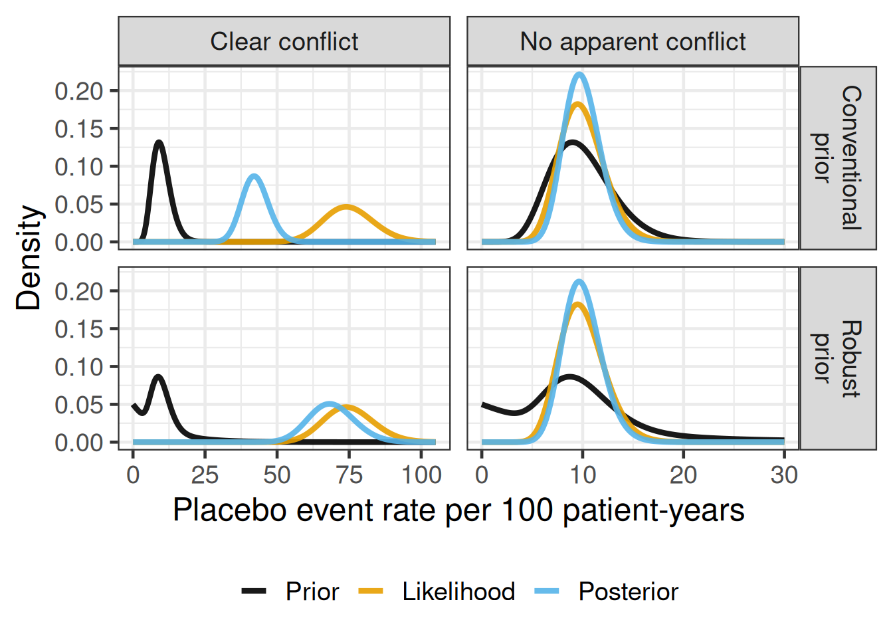
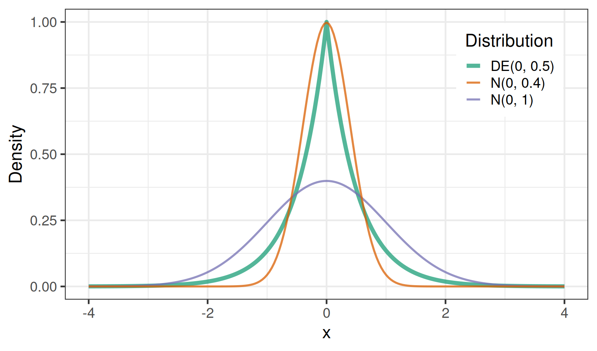
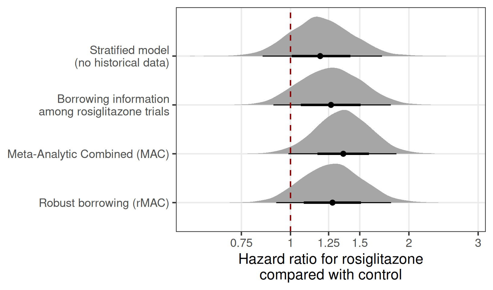
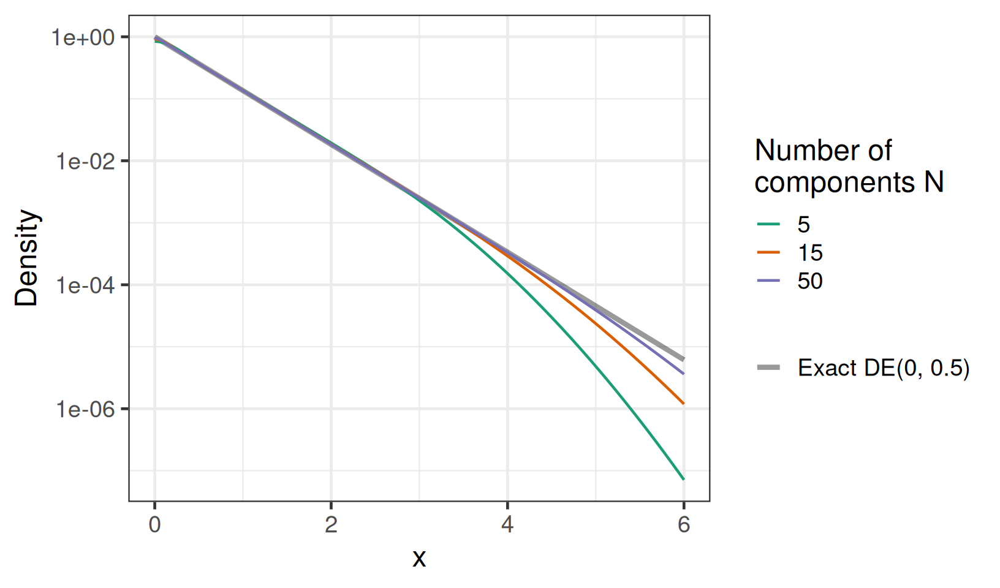
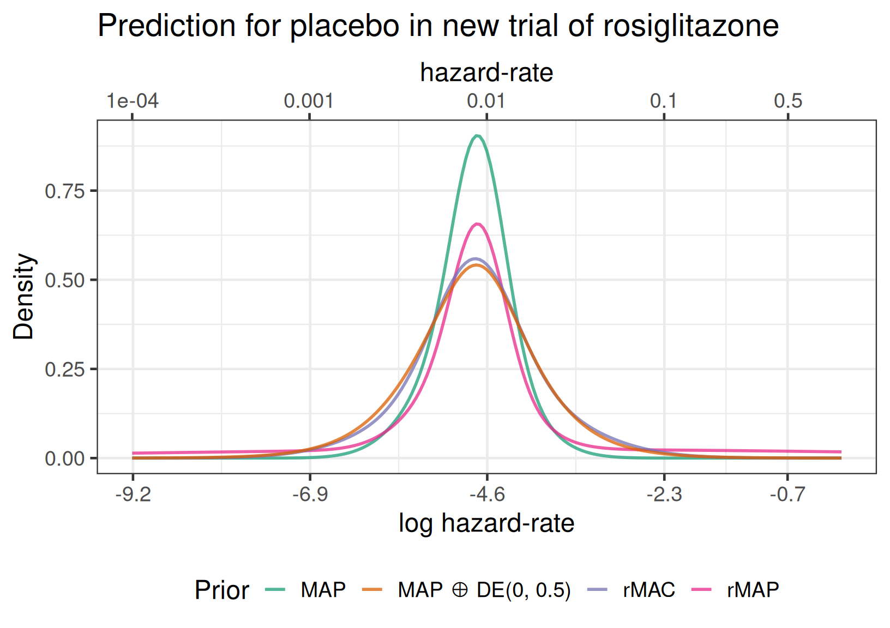

library(tidyverse)
library(here)
library(brms)
library(RBesT)
library(gt)
library(ggdist) # visualizing distributions/priors/posteriors
library(distributional) # distributions (that we then use in via ggdist)
library(directlabels)
# instruct brms to use cmdstanr as backend and cache all Stan binaries
options(brms.backend="cmdstanr", cmdstanr_write_stan_file_dir=here("_brms-cache"))
# create cache directory if not yet available
dir.create(here("_brms-cache"), FALSE)
set.seed(678571)
# default controls args passed to Stan
control_args <- list(adapt_delta=0.99, step_size=0.1)
# nice common ggplot2 theme
theme_set(theme_bw(base_size=18))19 Robust borrowing in the meta-analytic combined approach
This case study:
- shows how to implement a robust version of the meta-analytic combined (MAC) approach
- discusses how the robust MAC approach for handling prior-data conflict by introducing a coefficient for historical studies (with a prior that is at the same time spiky near zero and heavy-tailed) compares to the robust meta-analytic predictive (rMAP) approach
- introduces continuous scale mixture distributions as robustifying priors; examples are the double-exponential or Student-t distribution, and shows how to use them both in
brmsand, in the form of an equivalent normal mixture, inRBesT
To run the R code of this section please ensure to load these libraries first:
19.1 Background
When comparing a drug to a control group, we often want to make use of prior knowledge of what we expect for the control group based on past trials. We would like methods for this to rely on the historical data when it appears to be compatible with our new data, but we want to increasingly discard it when it appears that the past experience may no longer be applicable for the present situation.
Let us discuss this for a simple case when the behavior of the control group of each study can be described with a single parameter. Let us assume that we are interested in fitting an exponential time to event model in a single new study and want to borrow information about the control group (log-)hazard rate.
19.1.1 Meta-analytic predictive (MAP) approach
One popular approach is to fit a hierarchical (meta-analytic) model to historical studies and to predict control group log-hazard rate for a new study. The samples from this posterior predictive for the mean distribution provide us with a meta-analytic predictive (MAP) prior (Neuenschwander et al. 2010).
For an accurate representation of the MAP prior density and the ability to exactly pre-specify the prior we usually use a mixture approximation to the MAP prior (Schmidli et al. 2014) in a subsequent analyses of our new data. This was illustrated in the “Use of historical control data” case study (see Chapter 4) for the case of binomial proportions. Here, for an exponential hazard rates we might use a mixture of gamma distributions, or for the control group log-hazard rate a mixture of normal distributions.
19.1.2 Robust meta-analytic predictive approach
Adding a weakly-informative or vague mixture component to the MAP prior (Schmidli et al. 2014) is one approach to making the MAP prior robust to prior-data-conflict. This robust MAP (rMAP) approach has become the defacto standard approach in practice, since it mitigates type I error inflation which can occur whenever the trial data turns out to be very different wrt to the historical data.
“Prior-data conflict”: A term commonly used to describe a degree of incompatibility between an analysis prior distribution and observed data. The more unusual the observed data are under the prior predictive distribution (or the more the likelihood favors parameter values to which the prior assigns relatively little probability), the stronger the “prior-data conflict”.
In practice, we will often have a limited sample size so that seemingly relatively extreme data can still occur under ordinary sampling variability. This can be assessed by comparing the observed data to the prior predictive distribution of the data implied by the pior. Thus, it will rarely be possible to conclude that data as extreme as observed is almost impossible under a given prior distribution. Thus, “prior–data conflict” is more a conventional shorthand for a continuum of “prior–data tension” rather than a situation one can clearly diagnose.
Still, conventional single-component conjugate prior distributions have bad frequentist operating characteristics when the true parameter values are in conflict with the prior. Thus, we are interested in priors that are “robust” in the sense of mitigating such scenarios by increasingly discarding the historical data the stronger the prior-data conflict is as illustrated with a simple example below.

19.1.3 Meta-analytic combined (MAC) approach
It is mathematically equivalent to the MAP approach (Schmidli et al. 2014) to fit a single hierarchical model to the historical control group data and the new data at the same time. This is called the meta-analytic combined (MAC) approach.
In the MAC approach it does not really matter whether our new data consists of a single study or multiple studies. I.e. it can be immediately used for the analysis of a single new study or for a meta-analysis by having a random study effect on the intercept of a hierarchical exponential time-to-event model. The MAC approach makes it explicit that we are jointly modelling the historical data and the trial data of interest. In so far it has been suggested in the literature Neuenschwander et al. (2016) to generalize the term historical (control) data to co-data referring to concurrent data. This follows from the joint modelling perspective which makes it explicit that we model on-trial and external trial data at the same time removing any distinction between “old” and “new” data.
For the MAP approach this is not as straightforward to create a prior that can be used for a meta-analysis, even for a single-parameter case such as exponential time-to-event data. The reason is that, if we assume a normally distributed random study effect on the intercept of our model on the log-hazard scale, we need to create a bivariate mixture approximation to the joint MAP distribution of the mean and scale parameters of this random effects distribution as described by Holzhauer (2017). This is a non-standard extension of the MAP approach of Neuenschwander et al. (2010), but we could use e.g. the RBesT R package to fit a multivariate normal mixture to samples from the posterior of the hierachical mean and log-scale parameters.
19.1.4 Robust Meta-analytic combined (rMAC) approach
Holzhauer (2020) has proposed a robust MAC (rMAC) approach mitigating prior-data-conflict. This approach outperforms the robust MAP approach due to its better behavior in cases of moderate prior-data-conflict, while both rMAP and rMAC perform well when there is no conflict or an obvious strong prior-data conflict.
Both the rMAP and rMAC are forms of ‘dynamic borrowing’ in the sense that how much the old/trial external data influences the new analysis is dynamically determined by how closely the new data resembles the old/external data. This can also both be seen as doing model averaging between a model that assumes exchangability between old/external and new data, and a model that discards the old data (Holzhauer 2020).
19.2 Data
The data used here are the data from Holzhauer (2017) and Holzhauer (2020) regarding the cardiovascular safety of rosiglitazone. The two papers explored methods for how to analyze major adverse cardiovascular event (MACE) occurrence in a set of 54 randomized controlled trials (RCTs) of rosiglitazone compared with controls taking into account what we know about control group hazard rates from the control groups of 64 other trials (for further details of the data (see Holzhauer 2017).
Time to first MACE occurrence in diabetic patients is reasonably well described by an exponential distribution. Treating the data as arising from exponentially distributed event times makes it much more plausible that control group parameters would be exchangeable across trials of substantially different duration than if we treated the number of patients with an event as binomially distributed (Holzhauer 2017).
Load and summarize data
rosiglitazone <- read_delim(here("data", "dataset.csv"),
delim = ";",
show_col_types = FALSE) |>
# Simple imputation for time to first event or censoring assuming that there
# is no overlap in patients with an event and those that drop-out prematurely
# (other than those that die of an event of interest). A follow-up of half of
# the trial duration is assumed for patients with an event and those that
# drop-out. We convert the time-scale to patient-years (rather than weeks by
# dividing by 52).
mutate(t = ( tau*(n-ifelse(is.na(z), 0, z)+ifelse(is.na(m), 0, m)-y) +
tau/2*(ifelse(is.na(z), 0, z)-ifelse(is.na(m), 0, m)+y) ) / 52 )
rosiglitazone |>
mutate(historical=factor(historical,
levels=c(0:1),
labels=c("Rosiglitazone studies",
"Historical studies")),
test = factor(test, levels=c(1, 0),
labels=c("Rosiglitazone", "Control"))) |>
group_by(historical, test) |>
summarize(
Trials = length(unique(trial)),
Patients = sum(n),
`Trials with no event in group` = sum(1L*(y==0)),
`Patients with event` = sum(y),
`Follow-up (patient-years)` = sum(t),
`Patients with event per patient-year` = `Patients with event` / `Follow-up (patient-years)`,
.groups="drop") |>
gt() |>
fmt_number(columns=c(Patients, `Follow-up (patient-years)`), decimals = 0) |>
fmt_number(columns=`Patients with event per patient-year`, decimals = 3)| historical | test | Trials | Patients | Trials with no event in group | Patients with event | Follow-up (patient-years) | Patients with event per patient-year |
|---|---|---|---|---|---|---|---|
| Rosiglitazone studies | Rosiglitazone | 54 | 10,502 | 18 | 83 | 5,394 | 0.015 |
| Rosiglitazone studies | Control | 54 | 7,526 | 33 | 52 | 3,927 | 0.013 |
| Historical studies | Control | 64 | 15,713 | 25 | 116 | 13,277 | 0.009 |
19.3 Model
The model proposed by Holzhauer (2020) for the log-hazard rate in arm j \in \{0, 1\} of study i \in I is
\log \lambda_{ij} = \beta_0 + \beta_1 \times 1\{ j = 1 \} + \beta_2 \times 1\{ i \in I_\text{historical} \} + \eta_i, \eta_i \sim N(0, \sigma^2).
It extends the meta-analytic combined approach to borrowing information from historical data by robustifying it against prior-data-conflict. The studies consist of the set of historical studies I_\text{historical} and the set of new studies I_\text{new}. \beta_0 is the expected log-hazard rate for a “new” historical study. \beta_1 is the log-hazard ratio for test treatment (j=1) compared with control (j=0). The \eta_i is the usual random study effect on the intercept modelling the studies exchangably.
The key component for robustifying the model to prior-data conflict is the \beta_2 \times 1\{ i \in I_\text{historical} \} term, where \beta_2 is a coefficient for how historical studies systematically differ from new studies. We get full borrowing like in the MAC model when \beta_2 is near 0, or full discarding of the historical data when \beta_2 is freely estimated and allowed to attain very large absolute values. Thus, the prior on \beta_2 ciritcally governs the behavior of the model and therfore it’s choice is important and will be explored in detail below.
Holzhauer (2020) implemented this model using custom Stan code. However, it is straightforward to implement this model using brms like this:
rmac_model <- bf( y | rate(t) ~ 1 + (1|trial) + test + historical,
family=poisson(link="log"), center=FALSE )
# This is equivalent to
# bf( y ~ 1 + (1|trial) + test + historical + offset(log(t)),
# family=poisson(link="log"), center=FALSE )
# Note: `test` and `historical` are numeric 0/1 indicatorsNOTE: The likelihood for an exponential time-to-first-event model for individual patient data is proportional to the Poisson likelihood for the total number of patients with an event in each trial arm with a log(sum across patients of time to first event or censoring)-offset. These aggregate data for each trial happen to be the sufficient statistics for exponentially distributed hazard rates for each trial arm.
19.3.1 Choice of prior distributions
rmac_prior <- prior(class = b, normal(-3.912, 5), coef = Intercept) + # log(0.02) = -3.912
prior(class = b, coef = test, cauchy(0, 2.5)) +
prior(class = b, coef = historical, double_exponential(0, 0.5)) +
prior(class = sd, coef = Intercept, group = trial, normal(0, 1))19.3.1.1 Prior distribution for the intercept
The exponential hazard rates for MACE events have historically been reported to be approximately 0.02 per patient-year (UK Prospective Diabetes Study (UKPDS) Group 1998), but we have substantial uncertainty whether this number would be applicable to the studies in this analysis due to differing inclusion-exclusion criteria and medical progress since the UKPDS results were published. Thus, we assign a normal prior centered on \log(0.02) \approx -3.912 but with a large standard deviation of 5 to allow for much higher or lower log-hazard rates.
19.3.1.2 Prior distribution for the hierarchical scale hyper-parameter
A half-normal \text{HN}(0, 1) prior for the between scale parameter of the trial random effect distribution allows for substantial between trial variability (\log(10) \approx 2.3 lies at the 97.9 th percentile of this prior). It gives only a low probability to very small between trial variability (\log(1.01) \approx 0.00995 lies at the 0.8 th percentile of this prior).
19.3.1.3 Prior distribution for the treatment effect
A wide vague \text{Cauchy}(0, 2.5) prior for the log-hazard ratio between test and control was used by Holzhauer (2020).
19.3.1.4 Prior distribution for how much historical trials differ from new ones (\beta_2)
By assigning a prior to \beta_2 that is very spiky near 0 (corresponds to full borrowing), but also heavy-tailed (extreme values far away from 0 result in almost no borrowing from the historical data), we achieve a behavior that resembles model averaging between full borrowing or full discarding of the historical data. An extreme of this idea is the spike-and-slab prior which puts a point mass at 0 with a certain weight and a flat prior for the remaining weight. This prior has been proposed in the Bayesian variable selection literature (Mitchell and Beauchamp 1988). However, the spike-and-slab prior is difficult to sample due to it’s discrete nature and the use of an improper flat prior which has lead to to the developemnt of the regularized horseshoe prior (Piironen and Vehtari 2017), for example. These more modern priors are often some form of a normal scale mixture prior (e.g. the Student-t distribution which is a normal mixture with an inverse-gamma distributed variance).
The double-exponential (DE) distribution is a normal scale mixture distribution with an exponentially distributed variance. The density is one such spiky long-tailed distribution. A \text{DE}(0, 0.5) prior performed well for an exponential time-to-event setting in the simulation study of Holzhauer (2020).
As we can see in the Figure below, a DE(0, 0.5) has a much spikier peak than a N(0, 1) distribution that is sometimes used as a prior for regression coefficients, but is much longer tailed than a N(0, 0.4) that has a similar density near zero.
Code to illustrate Laplace prior
dlaplace <- function(x, location, scale) {
1 / (2 * scale) * exp(-abs(x - location) / scale)
}
rlaplace <- function(n, location, scale) {
tmp_ <- runif(n = n, -0.5, 0.5)
location - scale * sign(tmp_) * log(1 - 2 * abs(tmp_))
}
ggplot(tibble(x = c(-4, 4)), aes(x)) +
stat_function(
fun = purrr::partial(dlaplace, location = 0, scale = 0.5),
n = 201,
aes(colour = "DE(0, 0.5)"),
linewidth = 2,
alpha = 0.75
) +
stat_function(
fun = purrr::partial(dnorm, mean = 0, sd = 1),
n = 201,
aes(colour = "N(0, 1)"),
linewidth = 1,
alpha = 0.75
) +
stat_function(
fun = purrr::partial(dnorm, mean = 0, sd = 0.4),
n = 201,
aes(colour = "N(0, 0.4)"),
linewidth = 1,
alpha = 0.75
) +
ylab("Density") +
scale_colour_discrete("Distribution") +
guides(colour = guide_legend(position = "inside")) +
theme(legend.position.inside = c(0.85, 0.79))
19.3.2 Model fitting
We fit the model as follows:
rmac_fit <- brm(
formula = rmac_model,
data = rosiglitazone,
prior = rmac_prior,
seed = 4657578,
refresh = 0
)19.3.3 Alternative models
We can also consider a fully stratified model that sets separate vague priors for the control group in each trial. This model does not borrow any information between studies in the rosiglitazone meta-analysis or from the historical trials, so we omit the historical trials from the data.
stratified_model <- bf(
y | rate(t) ~ 0 + trial + test,
family = poisson(link = "log")
)
# we need the names of all coefficients related to the trial factor,
# which we can get by asking brms which priors it will define via the
# get_prior function which returns a data.frame derived object
trial_coefs <- get_prior(stratified_model, filter(rosiglitazone, historical == 0)) |>
filter(str_starts(coef, "trial")) |>
pull(coef)
# the prior_string function allows us to set specific priors for a large
# number of factor levels of a categorical variable
stratified_prior <-
prior_string("normal(-3.912, 5)", class = "b", coef = trial_coefs) +
prior(cauchy(0, 2.5), class = b, coef = test)
stratified_fit <- brm(
formula = stratified_model,
data = filter(rosiglitazone, historical == 0),
prior = stratified_prior,
refresh = 0
)Another option is to discard the historical data, but borrow information across the control groups of the trials in the rosiglitazone meta-analysis, in that case we no longer need the + historical term in the model
nohist_model <- bf(
y | rate(t) ~ 1 + (1 | trial) + test,
family = poisson(link = "log"),
center = FALSE
)
nohist_prior <- prior(class = b, coef = Intercept, normal(-3.912, 5)) +
prior(class = b, coef = test, cauchy(0, 2.5)) +
prior(class = sd, coef = Intercept, group = trial, normal(0, 1))
nohist_fit <- brm(
formula = nohist_model,
data = filter(rosiglitazone, historical == 0),
prior = nohist_prior,
refresh = 0
)Finally, we look at the MAC model without robustification against prior-data-conflict.
mac_model <- bf(
y | rate(t) ~ 1 + (1 | trial) + test,
family = poisson(link = "log"),
center = FALSE
)
mac_prior <- prior(class = b, coef = Intercept, normal(-3.912, 5)) +
prior(class = b, coef = test, cauchy(0, 2.5)) +
prior(class = sd, coef = Intercept, group = trial, normal(0, 1))
mac_fit <- brm(
formula = mac_model,
data = rosiglitazone,
prior = mac_prior,
refresh = 0
)19.4 Results
19.4.1 Hazard ratio for rosiglitazone versus control
The posterior distributions for the hazard ratio for rosiglitazone compared with control from the four different models are shown in the figure below.
Plot posterior distributions for hazard ratio
model_labels <- c(
"Stratified model\n(no historical data)",
"Borrowing information\namong rosiglitazone trials",
"Meta-Analytic Combined (MAC)",
"Robust borrowing (rMAC)"
)
tibble(
fit = list(stratified_fit, nohist_fit, mac_fit, rmac_fit),
model = factor(
model_labels,
levels = rev(model_labels),
labels = rev(model_labels)
)
) |>
rowwise() |>
mutate(b_test = as_draws_rvars(fit)$b_test) |>
ggplot(aes(xdist = b_test, y = model)) +
ggdist::stat_slabinterval() +
geom_vline(xintercept = 0, color = "darkred", lty = 2) +
scale_x_continuous(
breaks = log(c(0.5, 0.75, 1, 1.25, 1.5, 2, 3, 4)),
labels = c(0.5, 0.75, 1, 1.25, 1.5, 2, 3, 4),
minor_breaks = NULL
) +
xlab("Hazard ratio for rosiglitazone\ncompared with control") +
ylab(NULL)
While the four analyses do not result in notably different inference, we can see the robust borrowing (rMAC) approach less heavily relied on the lower average hazard rate of the historical trials, which resulted in a higher posterior hazard ratio for the MAC compared with the rMAC approach.
In fact, the point estimate of the rMAC approach is close to the one we obtain when borrowing information about control group log-hazard-rates among rosiglitazone trials. However, if we do not use historical data, our posterior uncertainty is greater - although not by a lot in this case due to the large amount of data in the rosiglitazone trials.
19.4.2 Predictive distribution for a new trial
Let’s look at the predictive distribution, we get for a new trial using either the robust MAC approach, the MAP approach or the rMAP approach.
# rMAC model fit to historical data only
rmac_hist_fit <- brm(formula = rmac_model,
data = filter(rosiglitazone, historical==1),
prior = rmac_prior,
refresh = 0)
# MAC model fit to historical data only (used to derive MAP / rMAP)
mac_hist_fit <- brm(formula = mac_model,
data = filter(rosiglitazone, historical==1),
prior = mac_prior,
refresh = 0)Note that when the rMAC model is fit to historical data only, the intercept \beta_0 and the coefficient \beta_2 are not separately identified by the likelihood. This is intentional. Without new studies this adds the prior on \beta_2 as uncertainty to the predictions for a new study.
19.4.2.1 Robustifying a MAP prior with a scale mixture
The rMAC approach suggests another, simpler way of making an existing MAP prior robust. Instead of fitting the rMAC model, we can take the MAP prior for a single new trial and add the \text{DE}(0, 0.5) “how much do historical trials differ” term to it directly. For a single new trial this gives exactly the rMAC predictive distribution, because the \beta_2 term simply shifts the control group log-hazard rate of the new trial by a double-exponentially distributed amount.
Adding a random shift to a random variable means convolving the two distributions. The obvious way to do this is by simulation: draw double-exponential random numbers, add them to the MCMC sample from the MAP distribution and re-fit a mixture to the result. That works, but it is a poor idea here. The whole point of a heavy-tailed robustification is what happens far out in the tails, and out there a Monte Carlo sample contains only a handful of draws. The tails of the resulting prior — the very feature that governs how quickly the historical data get discarded — would then be determined by sampling noise and by whatever automixfit() happens to fit in a region where it has almost no information.
We can avoid this entirely and do the convolution analytically. The construction rests on three facts:
The double-exponential distribution is a normal scale mixture. If the variance V follows an exponential distribution, then a normal distribution with that variance is double-exponential, \text{DE}(0, b) = \int_0^\infty N(0, V) \, p(V) \, \text{d}V, \qquad V \sim \text{Exp}\!\left(\tfrac{1}{2b^2}\right), where the rate is chosen such that \text{E}[V] = 2b^2, which is the variance of a \text{DE}(0, b) distribution.
The mixing distribution can be discretized deterministically. We split the exponential distribution of V into N strata of equal probability 1/N and represent each stratum by a single variance value, namely the mean of V within that stratum, V_k = \text{E}[V \mid V \in \text{stratum } k] = N \int_{(k-1)/N}^{k/N} Q_V(p) \, \text{d}p, where Q_V is the quantile function of V. The result is an N-component normal mixture with all components centered on zero. Using stratum means rather than stratum quantiles is what makes this work: it reproduces the variance 2b^2 of the double-exponential distribution exactly for any N, as explained in the box below. Beyond that first moment it is a quasi-Monte Carlo (stratified) approximation: it uses no random numbers, is exactly reproducible and gets systematically better as N grows.
The sum of two independent normal mixtures is a normal mixture. Convolving a mixture with components (w_i, \mu_i, \sigma_i) with one with components (v_j, \nu_j, \tau_j) gives all pairwise combinations, with weights w_i v_j, means \mu_i + \nu_j and variances \sigma_i^2 + \tau_j^2.
RBesTalready implements this internally, so we do not have to code it ourselves.
Putting these together gives a robustify_scale_mixture() function that turns any normal mixture MAP prior into a robustified one, without any simulation:
NoteDiscrete scale mixture density approximation considerations
The mixing distribution enters only through the quantile function Q_V, which we parametrize by the upper tail probability p = \text{P}(V > v) = 1 - F_V(v), with F_V the distribution function of V. Any symmetric, zero-centered normal scale mixture can therefore be used simply by passing a different qvariance(p, scale) to the code below.
Why stratum means. The integral defining V_k is the ordinary mean integral, written in a different variable. Substituting p = 1 - F_V(v), so that \text{d}p = -f_V(v) \, \text{d}v and v = F_V^{-1}(1 - p) = Q_V(p), maps the range of V onto the unit interval — reversing its orientation, which is why the sign cancels against the swapped integration limits — and turns \text{E}[V] = \int v \, f_V(v) \, \text{d}v \quad \text{into} \quad \int_0^1 Q_V(p) \, \text{d}p, while the same substitution restricted to a slice of V space gives the V_k above. Since all weights are 1/N and \sum_{k=1}^{N} \int_{(k-1)/N}^{k/N} = \int_0^1, the discretization therefore satisfies \sum_{k=1}^{N} \tfrac{1}{N} V_k = \int_0^1 Q_V(p) \, \text{d}p = \text{E}[V] identically, for any N. As the components are centered on zero, the mixture variance is exactly \text{E}[V], the variance of the target. Representing each stratum by its midpoint quantile instead would have no such property and would noticeably understate the variance.
The requirement. Every V_k must be finite. All strata but the last cover a bounded range of V, so only the last one can fail — and by the identity above that happens precisely when \text{E}[V] does not exist. Numerically, the integral is taken over the substitution p = e^{-t}, which turns the heavy upper tail into an exponentially decaying integrand on (0, \infty); integrating over p directly leaves an integrable singularity at the last stratum boundary that adaptive quadrature copes with poorly.
What this means for the usual robustifying priors:
| prior | mixing variance V | requires |
|---|---|---|
| double-exponential \text{DE}(0, b) | \text{Exp}(1/(2b^2)) | always fine |
| Student-t_\nu, scale b | \text{Inv-Gamma}(\nu/2, \nu b^2/2) | \nu > 2 |
| horseshoe-like: half-t_\nu on the scale | b^2 F(1, \nu) | \nu > 2 |
| horseshoe | b^2 F(1, 1) | never |
The last two rows are the same construction, N(0, b^2\lambda^2) with \lambda \sim \text{half-}t_\nu(0,1), so that \lambda^2 is F distributed and \nu tunes how heavy the tails are. The horseshoe is its \nu = 1 (half-Cauchy) special case, which has no mean and is thus out of reach — and note that it fails silently, since tan(pi/2) is a large finite number in floating point rather than Inf. In code:
qvariance_student_t <- function(p, scale, nu = 4) {
1 / qgamma(p, shape = nu / 2, rate = nu * scale^2 / 2)
}
qvariance_quasi_horseshoe <- function(p, scale, nu = 3) {
scale^2 * qf(p, df1 = 1, df2 = nu, lower.tail = FALSE)
}If \text{E}[V] does not exist, a different discretization is needed, one that approximates the variance integral stably — for example representing each stratum by its median Q_V\!\left(1 - (k - \tfrac{1}{2})/N\right), which is always finite but no longer reproduces the variance exactly. Finally, the heavier the tails, the larger N has to be before the far tail of the approximation settles down.
Definition of robustify_scale_mixture()
# Quantile function of the mixing variance V for a DE(0, scale)
# distribution, parametrized by the UPPER tail probability
# p = P(V > v). A DE(0, b) is a N(0, V) mixed over
# V ~ Exp(rate = 1 / (2 * b^2)), where the rate is chosen such that
# E[V] = 2 * b^2, the variance of a DE(0, b).
qvariance_laplace <- function(p, scale) {
qexp(p, rate = 1 / (2 * scale^2), lower.tail = FALSE)
}
# Discrete normal scale mixture approximation to a symmetric,
# zero-centered normal scale mixture distribution.
#
# We split the distribution of the mixing variance V into n strata of
# equal probability 1/n and represent each stratum by the conditional
# mean of V within it, which is n times the integral of the quantile
# function of V over the stratum. See the box above for why stratum
# means, why E[V] must exist and why we substitute p = exp(-t).
mixnorm_scale_mixture <- function(scale, n = 50,
qvariance = qvariance_laplace) {
# stratum boundaries as t = -log(p); t_0 = 0 and t_n = Inf
t_k <- c(0, -log1p(-seq_len(n) / n))
integrand <- function(t) {
p <- exp(-t)
out <- qvariance(p, scale = scale) * p
# p * Q(p) tends to 0 whenever E[V] exists; this guards against
# 0 * Inf = NaN once p underflows
out[!is.finite(out)] <- 0
out
}
v_k <- vapply(seq_len(n), \(k) {
n * integrate(integrand, t_k[k], t_k[k + 1])$value
}, numeric(1))
do.call(mixnorm, lapply(seq_len(n), \(k) c(1 / n, 0, sqrt(v_k[k]))))
}
# Robustify a normal mixture prior by convolving it with a symmetric,
# zero-centered normal scale mixture (by default a double-exponential
# distribution with the given scale).
#
# mix normal mixture (e.g. as returned by automixfit) to robustify
# scale scale of the robustifying distribution
# n number of components used to approximate the mixing
# distribution
# qvariance function(p, scale) giving the quantile function of the
# mixing variance as a function of the upper tail
# probability p = P(V > v); swap this out for other normal
# scale mixtures
robustify_scale_mixture <- function(mix, scale, n = 50,
qvariance = qvariance_laplace) {
# the normal scale mixture trick only works on an unconstrained
# (normal) scale, so we insist on a normal mixture here
stopifnot(inherits(mix, "normMix"))
robust_part <- mixnorm_scale_mixture(scale, n, qvariance)
# RBesT:::mixnormdiff is an internal RBesT function returning the
# normal mixture of the *difference* of two normal mixtures; negating
# the means turns it into the sum we want (a no-op for a symmetric
# zero-centered mixing distribution, but kept for generality)
robust_part[2, ] <- -robust_part[2, ]
RBesT:::mixnormdiff(mix, robust_part)
}How good is the approximation? The figure below compares the exact \text{DE}(0, 0.5) density with the discrete normal scale mixture for a few choices of N. Note the log-scale for the density, which lets us judge the tails.
Code to check the accuracy of the approximation
laplace_check <- tibble(N = c(5L, 15L, 50L)) |>
rowwise() |>
reframe(
N = N,
x = seq(0, 6, 0.02),
Approximation = dmix(mixnorm_scale_mixture(scale = 0.5, n = N), x)
) |>
mutate(N = factor(N))
ggplot(laplace_check, aes(x = x)) +
stat_function(
fun = purrr::partial(dlaplace, location = 0, scale = 0.5),
n = 201, aes(linetype = "Exact DE(0, 0.5)"), linewidth = 1.5, alpha = 0.4
) +
geom_line(aes(y = Approximation, colour = N), linewidth = 0.8) +
scale_y_log10() +
scale_colour_discrete("Number of\ncomponents N") +
scale_linetype_manual(NULL, values = "solid") +
ylab("Density")
Even a handful of components does well in the body of the distribution, and N = 50 (the default) is essentially indistinguishable from the exact density over the range that matters in practice. Two things are worth pointing out. First, the approximation slightly rounds off the sharp peak at zero, since a finite mixture of normals cannot reproduce the cusp of the double-exponential density. This is irrelevant here, because we immediately convolve with a MAP prior whose own components have a non-negligible standard deviation, which smooths the peak away in any case. Second, very far out the approximation becomes light-tailed relative to the exact density — increasing N pushes this point further out.
Since the result is an ordinary RBesT normal mixture, we can use it with all the usual machinery, in particular conjugate updating with postmix(). The price we pay is that the mixture has N \times (number of MAP components) components, but that causes no practical difficulty.
We can now fit mixture approximations to these predictive distributions. We will also construct a robustified version of the MAP prior directly, by convolving it with a \text{DE}(0, 0.5) distribution as described in Section 19.4.2.1. This is another way of achieving the same effect as the rMAC prior.
map_approx_mac_sample <- posterior_linpred(
mac_hist_fit,
newdata = tibble(trial = "newrosi", test = 0, historical = 0, t = 1),
allow_new_levels = TRUE,
sample_new_levels = "gaussian"
)
map_approx_mac <- automixfit(map_approx_mac_sample[, 1], Nc = seq(1, 10, 1))
# robustify the MAP prior by convolving it with a DE(0, 0.5) distribution
map_approx_plus_de <- robustify_scale_mixture(map_approx_mac, scale = 0.5)
map_approx_rmap <- robustify(map_approx_mac, weight = 0.3, mean = -3.97, sigma = 5)
map_approx_rmac_sample <- posterior_linpred(
rmac_hist_fit,
newdata = tibble(trial = "newrosi", test = 0, historical = 0, t = 1),
allow_new_levels = TRUE,
sample_new_levels = "gaussian"
)
map_approx_rmac <- automixfit(map_approx_rmac_sample[,1], Nc = seq(1, 10, 1))If we plot these different predictive distributions, we can see that, as expected, both the rMAP and rMAC priors are substantially more heavy-tailed than the MAP prior. This is what makes them more robust than the MAP prior to prior-data-conflict. However, the two are more long-tailed in a different manner: the rMAC prior has a lot of distributional weight on moderate deviations from the MAP prior, while the rMAP prior puts a lot more prior weight on more extreme deviations. This has the consequence that the transition from not discounting the historical data much to completely discounting is quite abrupt for the rMAP approach, while the transition between the two behaviors is more gradual for the rMAC prior.
We can also see, that convolving the MAP prior with a double-exponential distribution reproduces the predictive distribution of the rMAC approach for a single trial.
Plot different predictive distributions
xbreaks <- c(0.0001, 0.001, 0.01, 0.1, 0.5)
ggplot(tibble(logHR = log(c(1E-4, 1))), aes(logHR)) +
stat_function(
fun = purrr::partial(dmix, mix = map_approx_mac),
n = 201,
aes(colour = "MAP"),
linewidth = 1,
alpha = 0.75
) +
stat_function(
fun = purrr::partial(dmix, mix = map_approx_rmap),
n = 201,
aes(colour = "rMAP"),
linewidth = 1,
alpha = 0.75
) +
stat_function(
fun = purrr::partial(dmix, mix = map_approx_rmac),
n = 201,
aes(colour = "rMAC"),
linewidth = 1,
alpha = 0.75
) +
stat_function(
fun = purrr::partial(dmix, mix = map_approx_plus_de),
n = 201,
aes(colour = "MAP \u2295 DE(0, 0.5)"),
linewidth = 1,
alpha = 0.75
) +
scale_colour_discrete("Prior") +
scale_x_continuous(
breaks = round(log(xbreaks), 1),
sec.axis = sec_axis(
~ exp(.),
breaks = xbreaks,
labels = xbreaks,
name = "hazard-rate"
)
) +
xlab("log hazard-rate") +
ylab("Density") +
labs(title = "Prediction for placebo in new trial of rosiglitazone") +
theme(legend.position = "bottom")
19.5 Conclusion
Methods for dynamic borrowing from external data for both the analysis of a single trial and for meta-analyses are a topic of ongoing research. However, brms and RBesT let us easily implment a number of these approaches.
In the rosiglitazone example the inference barely changed across the different approaches models. However, that’s partially because there are a lot of data in the rosiglitazone trials included in the meta-analysis. The value of dynamic borrowing of historical information will be greatest when there are a lot of historical data and not so much data in the current trial(s).
The robust MAP approach is popular due to its simplicity, the possibility to analyze new data without MCMC sampling and the intuitively appealing idea of having a tunable weight for a vague mixture component. However, the weights given to the different mixture components do not have a simple interpretation. Additionally, the rMAP approach may not behave well in cases where it is not completely clear whether there is a prior-data conflict or not.
The robust MAC approach is an interesting approach, because it is both easy to use and simulation studies suggest that it outperforms the rMAP approach for borrowing information about exponential control-group log-hazard rates from historical data. In the recurrent events setting or for binary outcomes, the same prior \text{DE}(0,0.5) prior that performed well for exponential time-to-event data might plausibly also be good choice. In contrast, there is not yet experience with the rMAC approach for continuous data. The reader is invited to explore this topic on their own in the second excercise for this chapter.
Inspired by the rMAC approach, we have another way of robustifying a MAP prior for a single trial. We can convolve the MAP mixture with a double-exponential distribution. By exploiting that the double-exponential distribution is a normal scale mixture, and by discretizing the mixing distribution deterministically using a quasi-Monte Carlo approach, this convolution can be done analytically and yields another normal mixture. This avoids the Monte Carlo error that a simulation-based convolution would introduce precisely in the tails, which are the part of the prior that governs how quickly the historical data are discarded. It also avoids having to run MCMC at all, once the MAP prior is available, which is particularly convenient when evaluating operating characteristics at the design stage.
Taking either samples from the posterior predictive distribution for a single new trial from the rMAC approach or after robustfying a MAP prior in that way (which is preferred as it more accuratley reflects the important heavy-tails of the DE), we can still use conjugate updating for mixture approximations to these samples when analyzing a single new trial. While the ability to do so (rather than use MCMC sampling) may not matter much for the final analysis of a trial, it is very useful when evaluating operating characteristics at the trial design stage. In contrast, when we construct a hyper-prior for a meta-analysis we would use MCMC sampling whether we use a MAP, rMAP, MAC or rMAC approach.
19.6 Exercises
- Baeten et al. (2013) reported a RCT of the anti-interleukin-17A monoclonal antibody secukinumab in the treatment of ankylosing spondylitis. The endpoint under analysis is a responder endpoint (20% response according to the Assessment of SpondyloArthritis international Society criteria aka “ASAS20” responders at week 6). Use the historical data available in the
RBesT::ASdata as additional information for the control group via the rMAC approach. Obtain samples from the prior predictive distribution for the control group of the Baeten et al. (2013) trial and visualize them. Look at the prior predictive distribution for the treatment and control groups, as well as the difference in proportions. Analyze the new trial and compare the results to the posterior by-group proportions (0.592 vs. 0.245) and difference in proportions (0.347 with 95% CrI 0.115 to 0.564) reported by Baeten et al. (2013).
example2 <- RBesT::AS |>
mutate(historical = 1, test = 0) |>
bind_rows(tibble(
study = "Baeten et al. 2013",
r = c(14, 1),
n = c(23, 6),
historical = 0,
test = c(1, 0)
))- The data from Banbeta et al. (2022) is about comparing resveratrol to control in the ADC-37 Alzheimer’s disease trial in terms of change in the continuous Alzheimer’s Disease Assessment Scale–Cognitive (ADAS-Cog) score at week 52. Note that a
DE(0, 0.5)prior on the log-hazard (or log-rate / logit scales) is dimensionless, but here has units on the change or mean scale. Thus, consider how in the rMAC approach the width of a double-exponential prior on the control group mean change from baseline should depend e.g. on the residual standard deviation of the endpoint.
adcs <- tibble(
trial = c(
"ADC-11",
"ADC-15",
"ADC-16",
"ADC-22",
"ADC-27",
"ADC-37",
"ADC-37"
),
historical = c(1, 1, 1, 1, 1, 0, 0),
test = c(0, 0, 0, 0, 0, 0, 1),
n = c(111, 202, 169, 63, 164, 55, 64),
chg = c(8.7, 8.0, 4.4, 6.1, 5.1, 4.8, 2.9),
sd = c(7.2, 5.8, 6.4, 7.1, 6.8, 6.3, 9.6)
)